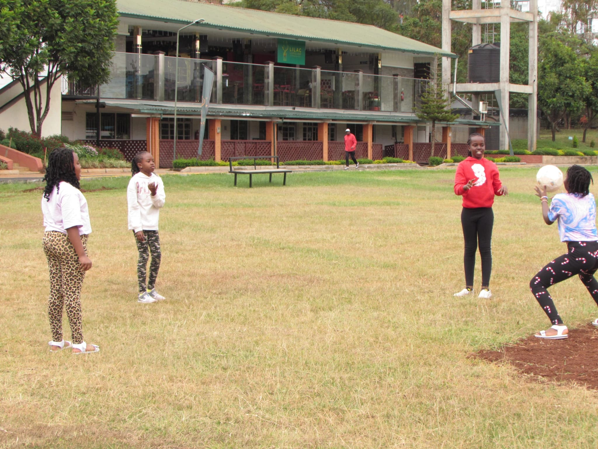

Hello and welcome back! Before we do a quick catch up, let's do a warm up first.
Hahaha, what a weird set of warm up moves. It was definitely fun though! Today, we're learning about the parable of the rich fool. Our friend here will read the story for us from the Bible.
We learn about priorities. We learn to grow our spiritual wealth(that is striving to know more of God) as we also grow our worldly riches. Prioritizing on growing only material wealth makes us look foolish since it's only God who controls our lives and no one knows if they'll get the chance to grow old an enjoy all the wealth they saved up. We learn the essence of helping out even with the little we have instead of always thinking about saving all the money for ourselves for financial security when we get older. We learn that it is God who gives and it is God who takes away.
That was definitely some food for thought. Seems like the art project is next, cool! We should be continuing from where we left off last week. And that means we are painting the layout we had already prepared.
We need to let the paint sink in and dry up before applying the next coat, so let's take our art outside to dry
then head to the field to do a mini-treasure hunt with the teachers,
play a little ball
and then take tea as we wait.
The wait is over, we can go outside to the flower-bed, pick our projects, bring them back in and finish up.
Before we move to the next activity, let's do some fun group games together. Here, in our respective groups we arrange ourselves in order of…age
…shoe size
and height
Finally, we play a ‘mingle-mingle' game to help group us for the last activity of the day.
This game is called ‘Spot The Difference'. There are four teams.
Each team has two printed pictures with some subtle differences. The aim is for each group to find 20 of these differences.
then present to the class.
That was definitely one of the best team-work games we've had to engage in this week. The game has ended right on time to go home. So, let's pray together before leaving with our parents.
Today was definitely fun. Hope to see you next week, bye!